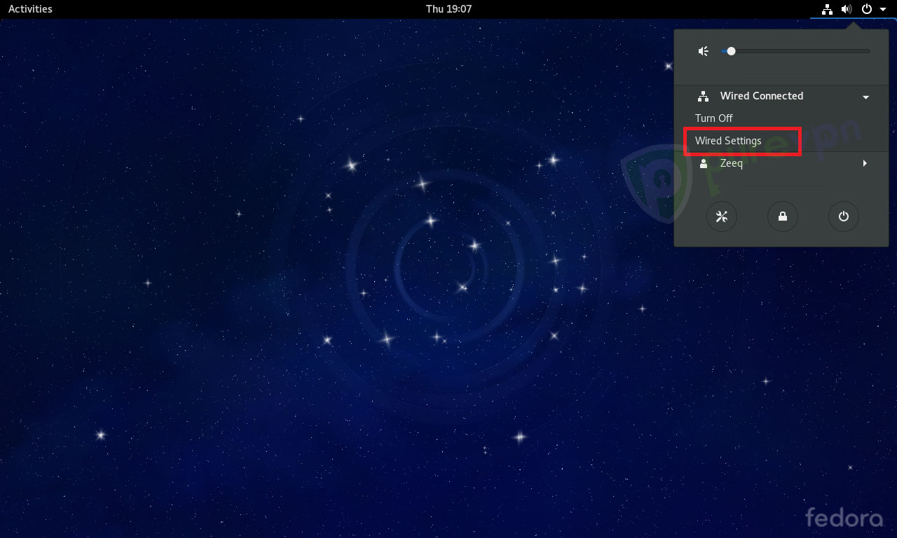
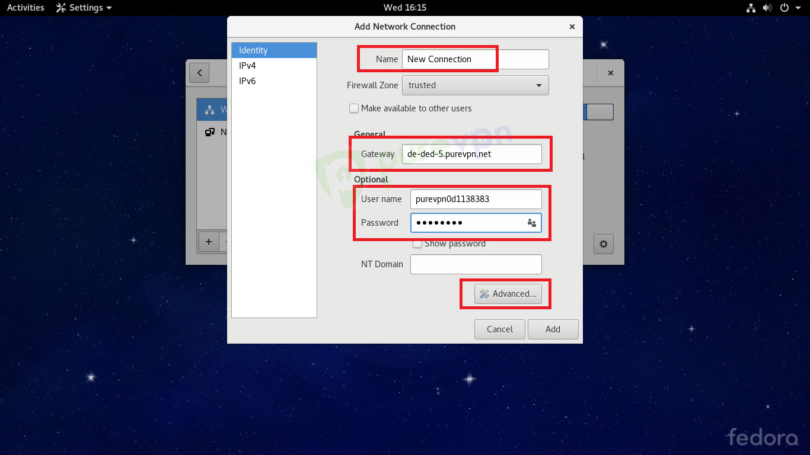

PASO A PASO
Esta guía es para aquellas personas que están teniendo problemas en la instalación de PureVpn en Linux Ubuntu, he aquí una guía de ello. Seleccione las siguientes opciones: •Haga clic en “ Red icono de\ conexión “ •Ir a “ conexiones VPN ” y seleccione “ Configuración de VPN ... “ Haga clic en "Añadir"
•Haga clic en el menú desplegable

•Seleccione “ Point-to Point Protocol (PPTP)” y haga clic en “ Crear “
Seleccione las siguientes opciones: •Insertar “Nombre de conexión:” PPTP PureVPN •Inserte servidor deseado en la “puerta de enlace” •Haga clic aquí para obtener la lista de servidores. •Introduzca nombre de usuario proporcionado por PureVPN •Introduzca la contraseña proporcionada por PureVPN •Haga clic en " Avanzado "
Seleccione las siguientes opciones: •Uso Punto-a-Punto (encryption point-to-point) (MPPE) •Permitir la compresión de datos BSD •Permitir la compresión de datos Deflate •Utilizar la compresión de cabecera TCP •Desactive la opción “EAP” •Haga clic en Aceptar (Ok)
•Click on “Save…” and close the “Network Connections” window
Seleccione las siguientes opciones: •Haga clic en “ Red icono de conexión “ •Ir a “ conexiones VPN ” y seleccione recién creado “ PureVPN PPTP conexión”
Está conectado con éxito ahora. ¡Disfrutar de la libertad! Seleccione las siguientes opciones: •Para desconectar de VPN. Haga clic en “ Red icono de conexión “ •Ir a “ conexiones VPN ” y seleccione “ Desconectar VPN “
Linux Mint La instalación de Linux Mint PureVPN le ayudará a establecer una conexión segura a Internet sin comprometer la velocidad de su internet. Con esta guía aprendera a instalar paso a paso PureVPN en Linux Mint. Haga clic en “Conexión de red” y seleccionar “Ajustes de red”
Haga clic en “+”
Haga clic en “Crear”
Seleccione “Point-to-Point Tunneling Protocol (PPTP)” y haga clic en “Crear”
Inserte la siguiente información: •Insertar “Nombre de conexión” PPTP PureVPN •Inserte servidor deseado en la “puerta de enlace “ •Haga clic aquí para obtener la lista de servidores •Introduzca nombre de usuario proporcionado por PureVPN •Introduzca la contraseña proporcionada por PureVPN •Haga clic en “Avanzado “
Seleccione las siguientes opciones •Uso Punto-a-Punto (MPPE) •Permitir la compresión de datos BSD •Permitir la compresión de datos Deflate •Utilizar la compresión de cabecera TCP •Haga clic en Aceptar"
Haga clic en “Guardar (Save)”
Linux Fedora Haga clic en el icono de configuración en el panel lateral superior y luego “por cable conectado (Wired connected)”
Ahora haga clic en “Configuración (wired settings)”

Haga clic en '+' para añadir una nueva conexión
Haga clic en 'VPN' en el panel de conexión Añadir red (Add Network Connection)
A continuación, haga clic en PPTP (Point-to-Point Tunneling Protocol).
Haga lo siguiente:
•Insertar “Nombre de conexión:” Nueva conexión o según su elección
•Inserte servidor deseado en la “puerta de enlace (Gateway)”.
•Haga clic aquí para obtener la lista de servidores
•Introduzca nombre de usuario proporcionado por PureVPN
•Introduzca la contraseña proporcionados por PureVPN
•Haga clic en “Opciones avanzadas”

Marca de verificación de las siguientes opciones:
•MSCHAP y MSCHAPv2 sólo en métodos de autenticación.
•Uso Punto-a-Punto (MPPE)
•Permitir la compresión de datos BSD
•Permitir la compresión de datos Deflate
•Utilizar la compresión de cabecera TCP
Ahora haga clic en Aceptar.
Haga clic en “Añadir (Add)”
Su 'Nueva conexión (New connections VPN)' ahora se puede ver en la lista de redes, Seleccione dicha opción y pase de OFF a On.
El marcador está ahora conectado con éxito.
Arch Linux
Iniciar accediendo al administrador de la red, como se muestra en la imagen siguiente. Después de acceder a Network Manager, seleccione Configuración de red (Network settings)
Para agregar un nuevo perfil, seleccione “+”
Seleccione VPN
Seleccione PPTP (Point-to-Point Tunneling Protocol)
Introduzca la siguiente información:
•Nombre: PureVPN PPTP
•Puerta de enlace (Gateway): Introduzca la dirección del servidor PureVPN (la lista completa de los servidores se puede acceder aquí )
•Introduzca nombre de usuario y contraseña PureVPN (esto luego de acceder al paquete Premium de PureVPN)
•Haga clic en Avanzada
Seleccione las siguientes opciones:
•Check Point-to-Point (MPPE)
•Marque todas las casillas por defecto, es decir, si están sin comprobar en primer lugar
•Habilitar la compresión de datos BSD
•Habilitar la compresión de datos desinflado
•Habilitar la compresión de cabeceras TCP
•Desmarque la casilla “Send PPP Echo packets”
•Seleccionar Ok
Seleccione su conexión PureVPN de nueva creación, y utilice el botón 'ON / OFF' para conectar y desconectar

¡Ahora está conectado correctamente a PureVPN!
Linea de comandos para la instalación en CentOS
Ejecute los siguientes comandos:
sudo yum update
sudo yum install PPTP
sudo modprobe nf_conntrack_pptp
sudo modprobe ppp_mppe
2. Ejecutar sudo nano / etc / ppp / chap-secrets para editar el archivo chap-secrets como se muestra a continuación:
vpnusername
Presione CTRL + S para guardar el archivo, y CTRL + X para salir del editor.
3. Para crear un archivo PureVPN, ejecute sudo nano / etc / ppp / peers / PureVPN e introduzca la siguiente información:
pty “pptp usca.pointtoserver.com -nolaunchpppd”
nombre yourVPNusername
remotename PPTP
require-mppe-128
file /etc/ppp/options.pptp
ipparam purevpn
Para guardar el archivo, presione CTRL + S.
Para salir del editor, pulse CTRL + X.
Tenga en cuenta que hemos utilizado actualmente usca.pointtoserver.com como la dirección del servidor. Usted puede elegir cualquier servidor de su elección. La lista de servidores está disponible aquí
4. Ejecutar el comando: sudo nano / etc / ppp / options.pptp .
Asegúrese de que no hay ningún signo '#' antes de que estas líneas.
cerradura
noauth
negarse-pap
se niegan eap-
refuse-cap
nobsdcomp
nodeflate
require-MPPE-128
Una vez hecho esto, pulse Ctrl + X para salir.
5. Ejecutar sudo nano /etc/ppp/ip-up.local y añadir la siguiente línea. Al hacerlo, se establecerá la ruta predeterminada a ppp0.
/ Sbin / route add default ppp0
6. Para guardar el archivo, presione CTRL + S. Para salir del editor, pulse CTRL + X.
7. Con el fin de ejecutar el archivo, ejecute: sudo chmod 755 /etc/ppp/ip-up.local
•Conectarse a la VPN ejecutando sudo pppd call PureVPN
•Ejecutar curl ipinfo.io para comprobar la exactitud de su dirección IP y la ubicación de VPN.
•Para desconectar la VPN, run sudo pppd pkill
•Si no puede conectarse, por favor verifica los registros de conexión mediante la ejecución de sudo cat / var / log / messages | pppd grep